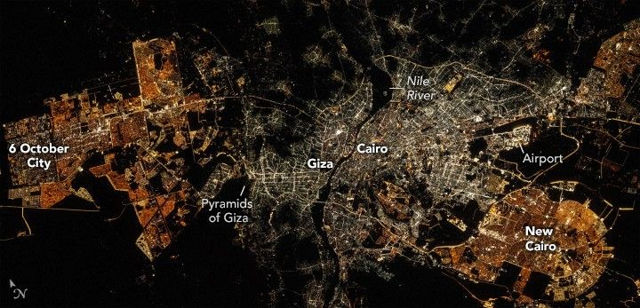
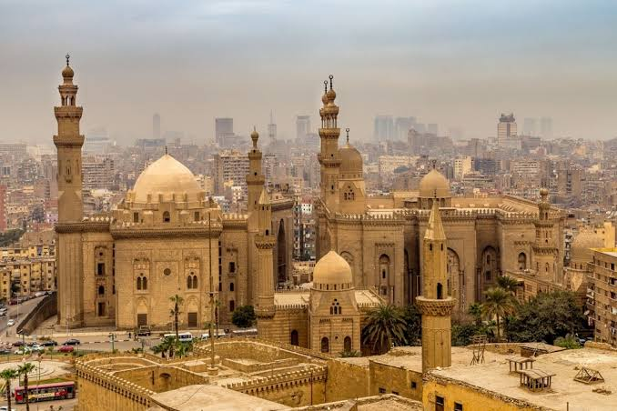
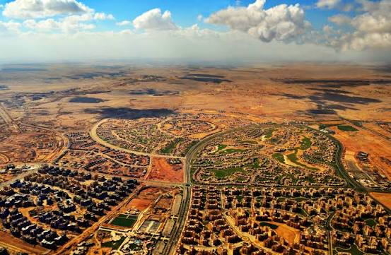
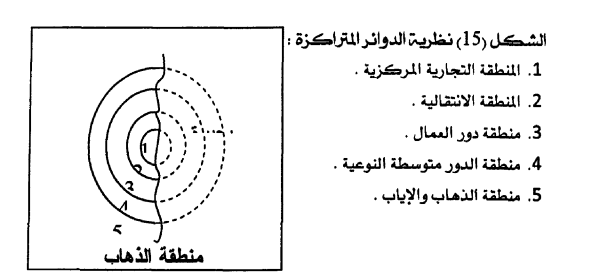
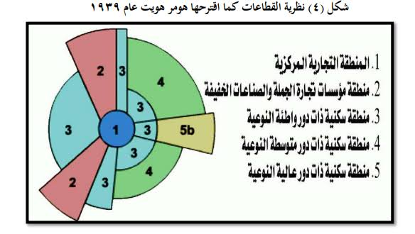
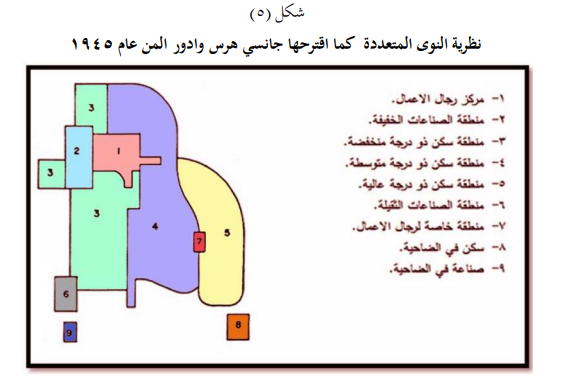

تركيبة المدينة: دراسة حالة القاهرة
مقدمة
تُعدّ مدينة القاهرة أكبر مدينة في العالم العربي، وأحد أكبر التجمعات الحضرية في إفريقيا والشرق الأوسط، إذ يتجاوز عدد سكان تجمعها الحضري الكبير 22 مليون نسمة سنة 2023. وتُعدّ المدينة مجالاً غير متجانس، تتحكم فيه عديد الضوابط التي تجعل منه مجالاً شديد التباين، إذ تتعايش فيه أحياء قديمة ذات طابع إسلامي عريق مع أحياء حديثة على النمط الغربي، وضواحٍ صناعية وأخرى سكنية، وشبكة كثيفة من الأدفاق السكانية والاقتصادية.
فما هي مكونات مدينة القاهرة وخصائص أحيائها المركزية والطرفية؟ وما هي العلاقات بين مركز المدينة وأطرافها؟ وما هي نماذج التركيبات المجالية للمدن الكبرى في العالم؟
I تركيبة مدينة القاهرة
1. الأحياء المركزية: المكونات، الخصائص والوظائف
أ. مركز المدينة
مركز المدينة هو الحي أو مجموعة الأحياء الأصلية للمدينة، وهو المجال الذي تتركز فيه الخدمات. ويمكن للمدينة أن يكون لها أكثر من مركز، ولذلك تسمى المدن متعددة المراكز. ومركز المدينة ليس بالضرورة نقطة واحدة، بل قد يكون مجموعة أحياء أصلية تشكل نواة المدينة، يتركز فيه النشاط الخدمي والتجاري والإداري، ولذلك يُعدّ قلب المدينة. وتعدد المراكز ظاهرة شائعة في المدن الكبرى بسبب التوسع العمراني وتنوع الوظائف.
ب. أصناف الأحياء
تتنوع الأحياء داخل المدينة حسب الوظيفة والمستوى العمراني والاجتماعي، ومنها:
- أحياء سكنية مركزية.
- أحياء راقية.
- عمارات من الطراز الواقعي والمتوسط.
- أحياء مركزية متهورة.
- أحياء عشوائية فوق أراضٍ زراعية.
- منطقة صناعية وحي صناعي فوق أراضٍ زراعية وأكواخ.
- مقابر مستقلة تُستعمل للسكن أيضاً.
- السكن المخطط.
- مشاريع سكنية جديدة ومدن جديدة.
ويعكس هذا التنوع تباين قيمة الأرض والضوابط الاقتصادية والاجتماعية، ويؤدي إلى تباين في المشهد الحضري ونوعية الخدمات.
ج. تعريف المدينة العربية الإسلامية
تُعرَف المدينة العربية الإسلامية، كمثيلاتها من مدن العصور الوسطى بأوروبا الغربية، بازدواجية التركيبة والمشهد. وما يميزها هو:
- جزء عتيق «المدينة»: يمثل النواة الأصلية حيث يحتل الجامع المركز وتنتظم من حوله الأسواق والمساكن.
- جزء حديث: ظهر غالباً في فترة الاستعمار، وهو من النمط الغربي.
ويظهر هذا الانقسام في النسيج العمراني والوظائف، ويجعل المدينة مجالاً غير متجانس.
د. موضع المدينة وموقعها
الموضع: يُحدَّد بنوع التضاريس المحلية حيث تقع المدينة (على ربوة، على هضبة، على سهل، على ضفة وادٍ...). والموضع علاقة المدينة بالتضاريس المحلية، ويفسر نشأة المدينة الأولى واتجاه نموها، فالمدينة على ضفة وادٍ تنمو على طول الوادي، والمدينة على ربوة تنمو حولها.
الموقع: يُحدَّد بالنسبة إلى محيط المدينة البعيد: بالنسبة إلى الإقليم، إلى الواجهات البحرية، إلى الحدود... وهو علاقة المدينة بمحيطها البعيد، ويحدد أهميتها الاستراتيجية والاقتصادية، مثل قربها من البحر أو الحدود أو الطرق التجارية الكبرى.
هـ. الحي
الحي جزء من المدينة، قد يكون مركزياً أو طرفياً، ويتميز بوحدة المشهد المتمثلة في نوعية المباني والتجهيزات، وكذلك بالمحتوى الاجتماعي وبوظائفه الإدارية أو التجارية أو الصناعية أو السكنية والترفيهية أو الجامعية... وهذا التنوع يساعد على فهم بنية المدينة.
و. موضع مدينة القاهرة وموقعها
تقع القاهرة على ضفاف نهر النيل في منطقة السهل الفيضي عند مدخل الدلتا. أما موقعها فيتمثل في كونها في شمال مصر، على نهر النيل، قريبة من البحر المتوسط وقناة السويس، وتتوسط العالم العربي. وهذا الموضع والموقع جعلا القاهرة مركزاً للتجارة والخدمات، وقربها من الدلتا والبحر المتوسط وقناة السويس يعزز دورها الاقتصادي والاستراتيجي في مصر والعالم العربي.
ز. وصف الأحياء المركزية للقاهرة
تتميز الأحياء المركزية للقاهرة بكثافة بنائية عالية، بمبانٍ متلاصقة ومآذن وقباب. وتمثل هذه الأحياء المركز التاريخي (القاهرة الإسلامية، الحسين، الأزهر، مصر القديمة). كما يتميز المشهد الحضري بكثافة سكانية عالية، وتنوع معماري يجمع بين الطابع الإسلامي القديم والمباني الحديثة. ويمكن التمييز بين نسيج قديم ذي طابع عتيق (النواة الأصلية)، ونسيج حديث ذي مبانٍ عالية وطرق واسعة. وهذا الوصف يبرز الازدواجية العمرانية في القاهرة، فالنسيج القديم يعكس التاريخ والوظائف التقليدية، والنسيج الحديث يعكس التوسع والوظائف العصرية.
ح. أصناف الأحياء المركزية للقاهرة ووظائفها
تشمل الأحياء السكنية المركزية، الأحياء الراقية، العمارات المتوسطة، الأحياء العشوائية، المناطق الصناعية، المقابر المستقلة، السكن المخطط، المشاريع السكنية الجديدة، والمدن الجديدة. وتتنوع وظائفها بين السكنية، التجارية، الإدارية، الصناعية، الخدمية، الترفيهية، الجامعية، والدينية. وهذا التنوع الوظيفي يعكس تعقيد المدينة، فبعض الأحياء تؤدي وظائف متعددة في الوقت نفسه، وبعضها تخصصي، وهذا يساعد على فهم العلاقات بين الأجزاء المختلفة.
2. الأحياء الطرفية: المكونات، الخصائص والوظائف
أ. الأرياض
هي أحياء خارج النواة (أي خارج الأسوار الأصلية للمدينة)، نشأت نتيجة امتداد المدينة على طول محاور النقل. والأرياض تمثل امتداداً عمرانياً غير مركزي، نشأت على طول محاور النقل، وهذا يبيّن أهمية الطرق في توجيه النمو العمراني.
ب. الضاحية
الضاحية هي حي أو مجموعة أحياء متصلة أو منفصلة مجاليّاً عن المركز، تأوي السكان والأنشطة التي غادرت المركز، وترتبط الضاحية «بالمركز» وبضواحٍ أخرى بتنقلات يومية للعمل وللدراسة وللترفيه وللتسوق وللخدمات الإدارية... والضاحية ليست منفصلة تماماً عن المركز، بل ترتبط به عبر تنقلات يومية، وهذا يخلق علاقات وظيفية وحركية بين المركز والأطراف.
ج. الضواحي السكنية بالقاهرة
- موقعها من مركز القاهرة: تقع على أطراف القاهرة خارج النواة المركزية، في المناطق الصحراوية شرق وغرب المدينة.
- تفسير هذا الموقع: الزحف العمراني، ارتفاع أسعار الأراضي في المركز، الهجرة من الريف، والنمو السكاني.
- نوع المباني: عمارات سكنية حديثة ومشاريع إسكان خرسانية.
- الصنف الاجتماعي-الاقتصادي لسكان هذه الضاحية: الطبقات المتوسطة والفقيرة، وحديثو الهجرة، والشباب.
وهذه الضواحي نتيجة مباشرة للنمو السكاني وارتفاع أسعار الأرض في المركز، وتوفر سكناً أقل تكلفة، لكنها تخلق حاجة إلى النقل اليومي والخدمات.
د. الأحياء الصناعية للقاهرة
تشمل المناطق الصناعية وحي صناعي فوق أراضٍ زراعية وأكواخ، والضواحي الصناعية مثل حلوان وشبرا الخيمة والعاشر من رمضان. ويعود سبب بعدها عن المركز إلى ارتفاع قيمة الأرض في المركز، والتلوث، والحاجة إلى مساحات كبيرة، وتوفر الأيدي العاملة الرخيصة، والقرب من الطرق السريعة. وبعد الصناعة عن المركز يفسّر بالضوابط الاقتصادية والمجالية، فالصناعة تحتاج مساحات وأيدي عاملة وطرقاً، ولا تتحمل تكلفة الأرض المرتفعة في المركز.
هـ. اتجاه توسع مدينة القاهرة
تتسع القاهرة نحو الشرق (مدينة نصر، العاشر من رمضان، القاهرة الجديدة) والغرب (6 أكتوبر، الشيخ زايد) والشمال (شبرا الخيمة، القليوبية) والجنوب (حلوان، 15 مايو). والظاهرة التي تجسمها هي الزحف العمراني على الأراضي الزراعية والتوسع الأفقي ونمو الضواحي والتحضر السريع. وهذا التوسع في كل الاتجاهات يعكس النمو الحضري السريع، ويؤدي إلى تآكل الأراضي الزراعية، ويطرح تحديات في النقل والخدمات والبيئة.
3. العلاقات بين أجزاء القاهرة
أ. اتجاه العلاقات بين مركز القاهرة وأطرافها
تكون العلاقات في اتجاهين: من الأطراف إلى المركز (للعمل، الدراسة، الخدمات، الترفيه) ومن المركز إلى الأطراف (للسكن، الصناعة، الترفيه، التسوق). وهذه العلاقات الثنائية الاتجاه تعني أن المركز والأطراف مترابطان، ولا يمكن فهم أحدهما بمعزل عن الآخر، لأن الحركة اليومية تربطهما.
ب. أنواع الأدفاق بين المركز والأطراف
تشمل الأدفاق السكانية اليومية (عمال، طلبة)، والأدفاق الاقتصادية (بضائع، خدمات)، والأدفاق الثقافية والإدارية، والأدفاق الترفيهية. وهذه الأدفاق تربط أجزاء المدينة وتخلق حركة مستمرة، وهي مؤشر على تكامل وظيفي بين المركز والأطراف.
ج. انعكاسات التوسع المجالي للقاهرة على الأراضي الفلاحية
يؤدي التوسع العمراني إلى تآكل الأراضي الزراعية الخصبة في الوادي والدلتا، وتحويلها إلى مناطق عمرانية، وانخفاض الإنتاج الزراعي، وتلوث التربة، وتغير استخدامات الأرض. والتوسع العمراني على حساب الأراضي الزراعية يمثل خطراً على الأمن الغذائي والبيئة، ويؤدي إلى فقدان أجود الأراضي الزراعية.
II نماذج التركيبات المختلفة للمدن
1. المدينة مجال غير متجانس
تتحكم في المدينة عديد الضوابط التي تجعل منها مجالاً شديد التباين، ومن هذه الضوابط:
- الضوابط الاقتصادية: المحددة لقيمة الأرض.
- الضوابط المجالية: التي تجعل من محاور النقل الرئيسية ومن المفترقات نقاط جذب قصوى يكثر التنافس حولها.
- الضوابط الاجتماعية: القاضية بتجمّع الفئات الاجتماعية المتشابهة من حيث الدخل والثقافة.
وهذه الضوابط تفسر لماذا تختلف أجزاء المدينة في الوظائف والأسعار والسكان. فقيمة الأرض تدفع الصناعة والسكن الفقير إلى الأطراف، ومحاور النقل تجذب الأنشطة، والتجمع الاجتماعي يخلق أحياء متجانسة.
2. نموذج القطاعات الدائرية
مثال للتركيبة المجالية لمدينة كبرى بأوروبا الغربية:
- ضاحية سكنية.
- حي الأعمال.
- المركز القديم.
- أحياء صناعية قديمة.
- ضاحية.
يصوّر النموذج المدينة كقطاعات دائرية حول المركز. فالمركز القديم تاريخي، وحي الأعمال حديث، والأحياء الصناعية القديمة قريبة من المركز، ثم الضواحي السكنية في الخارج. وهذا يعكس تطوراً تاريخياً ووظيفياً.
3. نموذج القطاعات
مثال للتركيبة المجالية لمدينة كبرى بأمريكا الشمالية:
- ضاحية سكنية.
- مناطق القطاع الصناعي والقطاع الثالث.
- الحي المركزي للأعمال (CBD).
- مناطق القطاع الصناعي والقطاع الثالث.
- ضاحية.
يتميز هذا النموذج بوجود حي مركزي للأعمال قوي، وتوزيع قطاعي للصناعة والخدمات، وضواحٍ واسعة. ويعكس النمو المحوري والامتداد على الطرق السريعة.
4. نموذج النوى المتعددة
مثال: تركيبة مدينة ليما (عاصمة البيرو):
- مركز الأعمال.
- صناعة خفيفة ومخازن.
- إقامات الطبقات الفقيرة.
- إقامات الطبقات المتوسطة.
- إقامات الطبقات المسورة.
- صناعة ثقيلة.
- ضاحية سكنية.
- ضاحية صناعية.
- منطقة الهجرات.
يبرز النموذج تعدد النوى: مركز أعمال، مناطق صناعية، أحياء سكنية متباينة، ومناطق هجرات. وهذا يعكس مدينة نامية ذات تباين اجتماعي ومجالي واضح.
أ. عناصر إضافية في هذا النموذج
- حي راقٍ.
- مركز الأعمال.
- توسع حديث.
- منطقة خضراء.
- أحياء متهورة.
- الأقاليم العرفية.
- منطقة سكنية.
- تكنولوجيا عالية.
- مناطق محيطات سكنية ومجمعات تجارية.
- منطقة صناعية قديمة.
- أحياء سكنية للطبقات المتوسطة.
- مركز بحث جامعي.
- مطار.
- طريق سريعة.
- قناة.
- المحيط الهادئ.
وهذه العناصر تجعل النموذج أكثر شمولية، إذ يجسم كافة عناصر المدينة من مركز وأحياء وضواحٍ. ويظهر تنوع الوظائف والأنشطة داخل المدينة.
خلاصة
يتناول هذا الدرس دراسة حالة لمدينة القاهرة كأكبر مدينة في العالم العربي، مع مقارنتها بنماذج عالمية. ويهدف إلى إدراك أن المدينة مجال غير متجانس، تتشابك فيه العوامل الاقتصادية والاجتماعية والمجالية. فالتركيبة المجالية للمدينة تتأثر بقيمة الأرض، ومحاور النقل، والتجمع الاجتماعي، فتنتج أحياءً مركزية وطرفية متنوعة، وعلاقات ثنائية الاتجاه بين المركز والأطراف عبر أدفاق سكانية واقتصادية وثقافية وترفيهية.
📖 تعريفات
🌍 دول ومناطق
- القاهرة: عاصمة مصر وأكبر مدينة في العالم العربي وإفريقيا، يتجاوز عدد سكان تجمعها الحضري 22 مليون نسمة سنة 2023. تقع على ضفاف نهر النيل في منطقة السهل الفيضي عند مدخل الدلتا، وتتميز بازدواجية التركيبة بين نواة قديمة إسلامية وجزء حديث على النمط الغربي.
- ليما: عاصمة البيرو، وهي مثال على نموذج النوى المتعددة في التركيبة المجالية للمدن النامية، إذ تتعدد فيها النوى بين مركز أعمال ومناطق صناعية وأحياء سكنية متباينة ومناطق هجرات.
- حلوان: ضاحية صناعية جنوب القاهرة، وهي من أهم المناطق الصناعية في التجمع الحضري للقاهرة.
- شبرا الخيمة: ضاحية صناعية شمال القاهرة، وتُعدّ من أكبر المناطق الصناعية في مصر.
- العاشر من رمضان: مدينة صناعية جديدة شرق القاهرة، أُنشئت في إطار سياسة التوسع العمراني وتخفيف الضغط عن المركز.
- القاهرة الجديدة: مدينة جديدة شرق القاهرة، تُعدّ من أكبر مشاريع التوسع العمراني في مصر المعاصرة.
- 6 أكتوبر: مدينة جديدة غرب القاهرة، أُنشئت في إطار سياسة التوسع العمراني نحو الصحراء الغربية.
- الشيخ زايد: ضاحية راقية غرب القاهرة، تُعدّ من أرقى المناطق السكنية في التجمع الحضري للقاهرة.
- القاهرة الإسلامية: النواة الأصلية لمدينة القاهرة، وتشمل الحسين والأزهر ومصر القديمة، وتتميز بطابع إسلامي عريق، وتتركز فيها المساجد والأسواق التاريخية.
- نهر النيل: أطول نهر في العالم، تقع القاهرة على ضفافه في منطقة السهل الفيضي عند مدخل الدلتا، وهو الذي يحدد موضع المدينة ويفسر نشأتها الأولى.
📌 أخرى
- مركز المدينة: الحي أو مجموعة الأحياء الأصلية للمدينة، وهو المجال الذي تتركز فيه الخدمات. وقد يكون للمدينة أكثر من مركز، ولذلك تسمى المدن متعددة المراكز. ويُعدّ قلب المدينة حيث يتركز النشاط الخدمي والتجاري والإداري.
- الحي: جزء من المدينة، قد يكون مركزياً أو طرفياً، يتميز بوحدة المشهد المتمثلة في نوعية المباني والتجهيزات، وكذلك بالمحتوى الاجتماعي وبوظائفه الإدارية أو التجارية أو الصناعية أو السكنية والترفيهية أو الجامعية.
- الموضع: يُحدَّد بنوع التضاريس المحلية حيث تقع المدينة: على ربوة، على هضبة، على سهل، على ضفة وادٍ... وهو علاقة المدينة بالتضاريس المحلية، ويفسر نشأة المدينة الأولى واتجاه نموها.
- الموقع: يُحدَّد بالنسبة إلى محيط المدينة البعيد: بالنسبة إلى الإقليم، إلى الواجهات البحرية، إلى الحدود... وهو علاقة المدينة بمحيطها البعيد، ويحدد أهميتها الاستراتيجية والاقتصادية.
- المدينة العربية الإسلامية: مدينة تتميز بازدواجية التركيبة والمشهد: جزء عتيق «المدينة» يمثل النواة الأصلية حيث يحتل الجامع المركز وتنتظم من حوله الأسواق والمساكن، وجزء حديث من النمط الغربي ظهر غالباً في فترة الاستعمار.
- الأرياض: أحياء خارج النواة (أي خارج الأسوار الأصلية للمدينة)، نشأت نتيجة امتداد المدينة على طول محاور النقل، وهي تمثل امتداداً عمرانياً غير مركزي.
- الضاحية: حي أو مجموعة أحياء متصلة أو منفصلة مجاليّاً عن المركز، تأوي السكان والأنشطة التي غادرت المركز، وترتبط «بالمركز» وبضواحٍ أخرى بتنقلات يومية للعمل وللدراسة وللترفيه وللتسوق وللخدمات الإدارية.
- الزحف العمراني: التوسع الأفقي للمدن على حساب الأراضي الزراعية والمساحات الطبيعية، وهو ظاهرة مميزة للمدن الكبرى في البلدان النامية، ويؤدي إلى تآكل الأراضي الزراعية الخصبة.
- الأدفاق السكانية اليومية: الحركات اليومية للسكان بين المركز والأطراف، وتشمل تنقلات العمال والطلبة والمرتفقين والمتسوقين، وهي مؤشر على تكامل وظيفي بين المركز والأطراف.
- نموذج القطاعات الدائرية: نموذج لتركيبة مدينة كبرى بأوروبا الغربية، يصوّر المدينة كقطاعات دائرية حول المركز: مركز قديم تاريخي، حي أعمال حديث، أحياء صناعية قديمة قريبة من المركز، ثم ضواحٍ سكنية في الخارج.
- نموذج القطاعات: نموذج لتركيبة مدينة كبرى بأمريكا الشمالية، يتميز بوجود حي مركزي للأعمال قوي (CBD)، وتوزيع قطاعي للصناعة والخدمات، وضواحٍ واسعة، ويعكس النمو المحوري والامتداد على الطرق السريعة.
- نموذج النوى المتعددة: نموذج لتركيبة مدينة نامية كليما (عاصمة البيرو)، يبرز تعدد النوى: مركز أعمال، مناطق صناعية، أحياء سكنية متباينة، ومناطق هجرات. ويعكس مدينة نامية ذات تباين اجتماعي ومجالي واضح.
- الحي المركزي للأعمال (CBD): المنطقة المركزية في المدن الكبرى، تتركز فيها الأنشطة التجارية والإدارية والمالية والخدمية عالية المستوى، وتتميز بأعلى قيمة للأرض وأكبر كثافة بنائية.
- عدم تجانس المدينة: خاصية بنيوية للمدينة، تتحكم فيها ضوابط اقتصادية (قيمة الأرض) ومجالية (محاور النقل) واجتماعية (تجمّع الفئات المتشابهة)، وتنتج تبايناً في الوظائف والأسعار والسكان.
🗺️ خرائط ومعطيات مصورة





